מחקר עבור Ashborn · נכון ל-17.11.2026 · משחק בסיס + Vessel of Hatred (2024) + Lord of Hatred (אפריל 2026)
הקטלוג מכסה את כל 7 האזורים של Sanctuary ב-D4 נכון להיום: 5 אזורי משחק הבסיס, Nahantu (Vessel of Hatred) ו-Skovos (Lord of Hatred). אחרי Lord of Hatred לא נוסף אזור חדש. ב-BlizzCon 2026 Blizzard הודיעו שאין הרחבה נוספת מתוכננת, ושב-2027 תצא חבילת דמות (Amazon) ולא אזור חדש.
לכל אזור יש: אווירה וביומה, פלטת צבעים, ארכיטקטורה ואביזרים, עיר בירה ועיירות, נקודות ציון, ומה Ashborn יכול לבנות (מאמץ: S = ימים, M = שבוע-שבועיים, L = כמה שבועות ומעלה).
מקורות התמונות: Diablo Wiki (Fandom), maxroll.gg, צילומי עיתונות רשמיים של Blizzard (דרך news.blizzard.com ו-rpgsite.net), ותמונות ממוזערות מ-YouTube במקומות שלא נמצא מקור אחר. כתובת המקור של כל תמונה מופיעה ברשימת הקרדיטים בסוף.
D4 מול מה שבנינו
המבוכים הקיימים, העולם הפתוח הקודם והעיר — גרפיקה, אסטים ואווירה, בכנות
- ערכים וצבע: D4 כמעט מונוכרומטי (אפור-חום-כחלחל) עם מקור אור חם אחד או שניים שמושכים את העין. אצלנו כל הפריים צבוע בגוון אחד (סגול-אדום בדנג'נים, ספיה בעיר הלבנה, לבן-שמש בטמיס), ולכן אין היררכיה ושום דבר לא בולט.
- הרצפה היא 60–70% מהמסך במצלמת המשחק. ב-D4 היא אף פעם לא נקייה: לכלוך, סדקים, שלוליות, אבנים שבורות, מעברי חומר ורצפה שנבלעת בקירות. אצלנו זו כמעט תמיד רשת אריחים קבועה ובולטת, וזה הדבר הראשון שמסגיר 'משחק אינדי'.
- צפיפות בשוליים, מרכז פנוי: ב-D4 הפרופים צפופים לאורך הקירות והקצוות ומשאירים שביל קרב נקי. אצלנו הפרופים מפוזרים כאיים באמצע (ערמות הריסות, דוכנים בודדים) או שהשטח פשוט ריק.
- אור כמסגור: D4 משתמש בחושך ובבריכות אור עם צל אמיתי כדי לכוון את השחקן. אצלנו או חשוך מדי (מדרגות הקריפטה, ה-Cinder Deep) או מואר באופן אחיד (טמיס בצהריים), ובשני המקרים אין כיוון.
- שכבות אווירה: ב-D4 יש ערפל נפחי, אבק, גחלים, עשן ואובך חום ברוב הפריימים. אצלנו האווירה באה בעיקר מגרעין צילום ומגוון צבע, ושכבות אמיתיות בעולם (ערפל, חלקיקים) מופיעות רק נקודתית, כמו בשלב II של ה-Gravelord.
- החוזקה שלנו היא אובייקטים בודדים 'הירואיים' (פסלים, חזיתות, מזרקה, פסיפס, פס חיים של בוס). החולשה היא החיבור ביניהם. לפני שמוסיפים עוד אסטים, עדיף להשקיע בחומרי רצפה, דקאלים, קלאטר לאורך קירות ותאורה.
דנג'ן 1: הקתדרלה והקריפטה (Cathedral of Ashes / Crypt Gate)
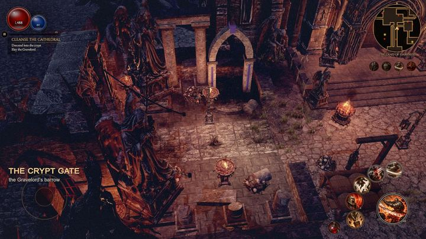
Ashborn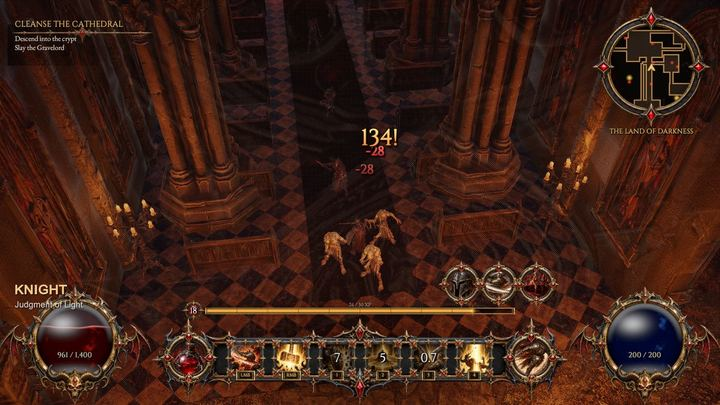
Ashborn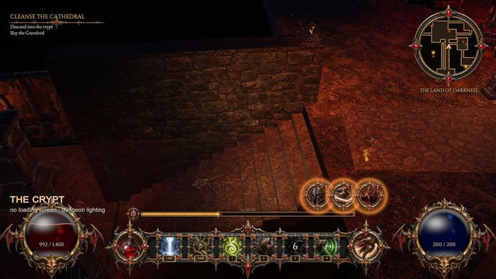
Ashborn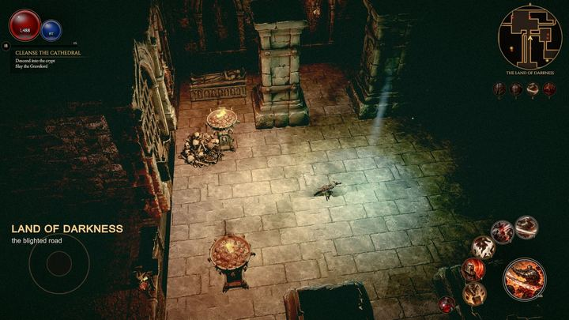
Ashborn D4
D4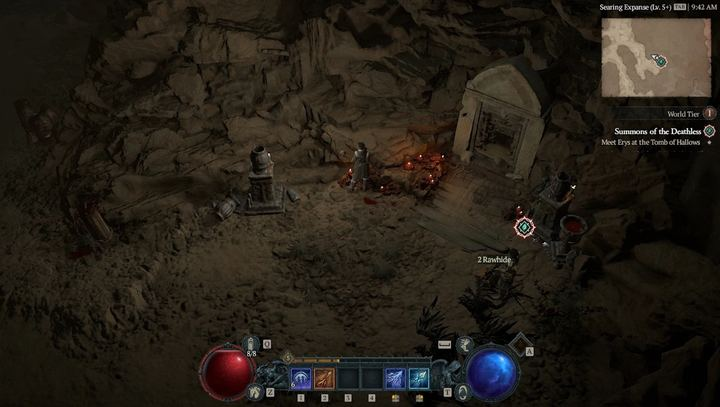
D4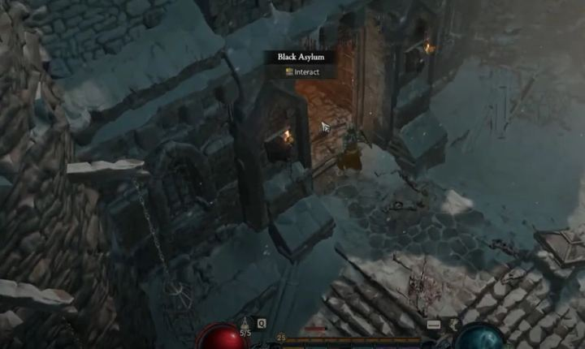
D4ב-D4 הפלטה כמעט אפורה, ונקודת אור חמה אחת עם צל אמיתי יוצרת עומק. אצלנו גרייד סגול-אדום רווי עוטף את כל הפריים, ולכן הפסלים, הרצפה והקירות באותו ערך ואין מוקד. האריחים אצלנו ברורים וחדים מדי, והטקסטורות חוזרות בלי שכבת לכלוך או AO בפינות. ב-D4 כל מפגש בין רצפה לקיר מלוכלך ושבור.
כמות הפסלים והפרופים הגותיים אצלנו טובה ואפילו עשירה (מלאכים, קשתות, גרדום, פמוטים), אבל הם מונחים על רשת ונראים 'מפוזרים' ולא מבנה אחד. ב-D4 הקירות מסיביים ושבורים, עם סילואטה לא סדירה, והפרופים צמודים לקירות. אצלנו הקירות חתוכים ישר (cutaway) וחשופים כקופסאות.
ב-D4 החושך מסביב חלק מהעיצוב: רואים רק את מה שמואר, וזה מרגיש מפחיד. אצלנו יש פמוטים ואש, אבל הם לא מטילים בריכת אור עם נפילה ברורה, ואין ערפל רצפה, אבק או קורי עכביש. יש פרטי סיפור (עצמות, גרדום), אבל הם לא מסודרים כסצנה.
- עושר הפרופים הגותיים: פסלים, קשתות וגרדום נותנים זהות חזקה
- חזית הקתדרלה ורצפת השחמט בפנים
- יש מעבר בלי מסך טעינה בין העולם לקריפטה
- גרייד צבע אחד על כל הפריים, בלי היררכיית ערכים
- רשת אריחים קבועה ונקייה מדי, בלי לכלוך במעבר בין רצפה לקיר
- מדרגות הקריפטה וחלק מהחללים חשוכים עד שלא רואים את הדרך
- קירות cutaway ישרים שנראים כמו תפאורה
- להוריד את הרוויה של הגרייד ב-40–60% ולתת לפמוטים ולאש להיות הצבע היחיד בפריים
- דקאלים לרצפה (לכלוך, סדקים, דם יבש, אבק) ו-vertex-blend של עפר בשוליים, במיוחד לאורך הקירות
- להזיז את הפרופים מהרשת אל הקירות ולהשאיר שביל קרב פנוי במרכז
- Point lights עם צל וטווח קצר בכל פמוט, וערפל רצפה נמוך
- לתת לקירות ה-cutaway קצה שבור ולא ישר
דנג'ן 2: The Cinder Deep, עיר הלבה השקועה
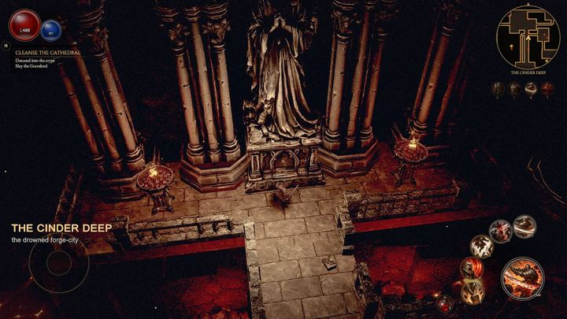
Ashborn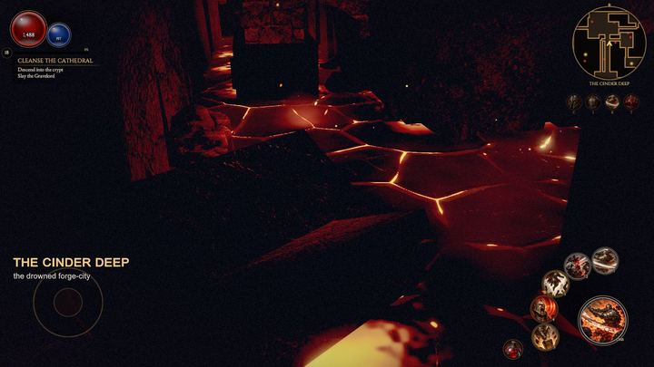
Ashborn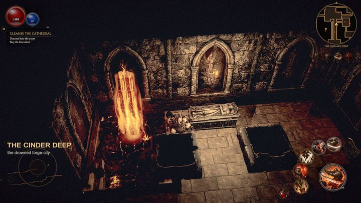
Ashborn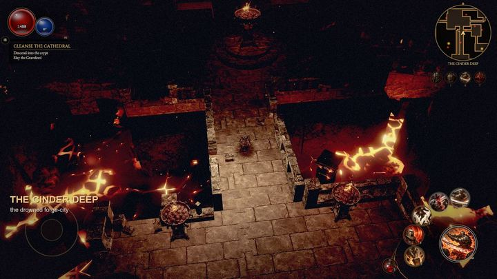
Ashborn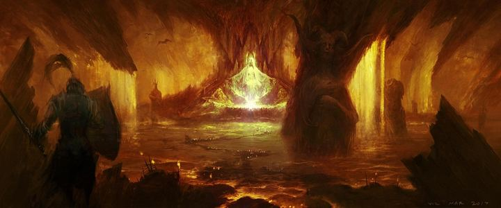
D4 D4
D4 D4
D4 D4
D4ב-D4 הלבה היא מקור האור הראשי: היא צובעת קירות, תקרות ודמויות בכתום, ויש bloom ואובך חום. אצלנו הלבה זוהרת רק בתוך עצמה, ו-80% מהמסך שחור עם גרעין, אז החלל לא נקרא. לוחות המשושים עם סדק זוהר אחיד ברוחב קבוע נראים פרוצדורליים, ולא כמו קרום לבה מתקרר.
הרעיון (עיר שלמה במערה, 4 גשרים, אי מרכזי, מקדש) גדול ונכון, אבל במצלמה רואים בעיקר קוביות כהות ולוחות שטוחים. ב-D4 לסלעים ולקירות יש סילואטה חדה ולא סדירה, שמתבלטת על רקע זוהר. חסרים אצלנו נטיפים, שרשראות ומבני נפחייה שיספרו שזו 'עיר נפחים'.
ב-D4 יש גחלים באוויר, עשן ואובך שמשתנה עם המרחק. אצלנו יש כמה ניצוצות, אבל אין עשן, אין heat distortion ואין רמז לרעש של המקום. הפריים שקט וריק ממה שהיה אמור להיות כור היתוך.
- הקונספט והפריסה: עיר במערה עם גשרים ונפילה למוות
- המקדש עם העמודים והפסל
- הסדקים הזוהרים ברצפה הם בסיס טוב לשפה ויזואלית
- רוב המסך שחור, והחלל והמסלול לא נקראים
- הלבה לא מאירה את הסביבה (אין אור מוחזר או emissive כמקור אור)
- סדקים פרוצדורליים אחידים, ומשושים שנראים כמו אריחים
- גרעין צילום כבד במקום אווירה אמיתית
- להפוך את הלבה למקור אור: Area/point lights כתומים לאורך הנהרות, או light probes אפויים עם emissive
- Height fog כתום-אדום עם צפיפות נמוכה, כך שהרקע הרחוק יהיה זוהר ולא שחור
- חלקיקי גחלים ועשן לאורך תעלות הלבה, ו-heat shimmer עדין מעל הבריכות
- לשבור את רשת המשושים: קרום לבה עם רוחב סדק משתנה ואזורים קרים כהים
- להוסיף 3–4 מבני נפחייה וכבלים כסילואטות על רקע הלבה
זירות בוס: ה-Gravelord וה-Brute of the Pit
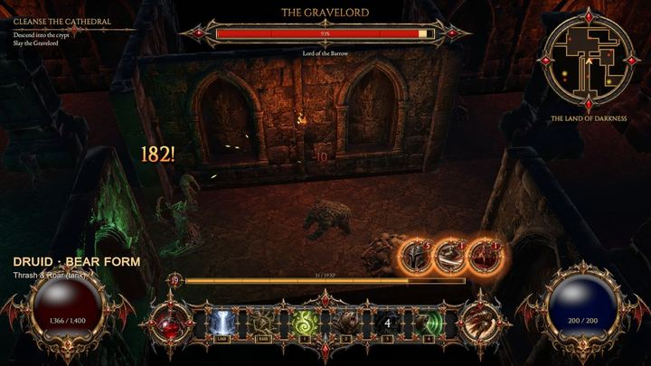
Ashborn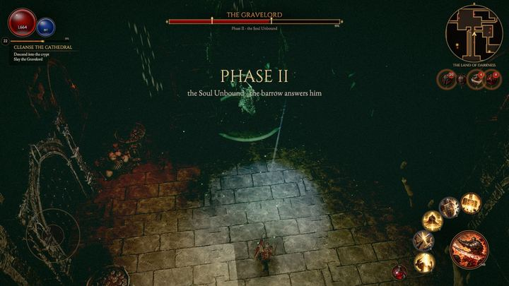
Ashborn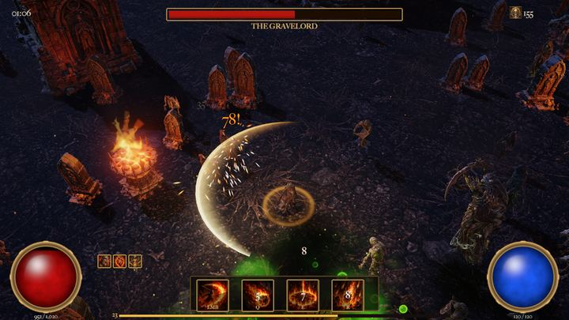
Ashborn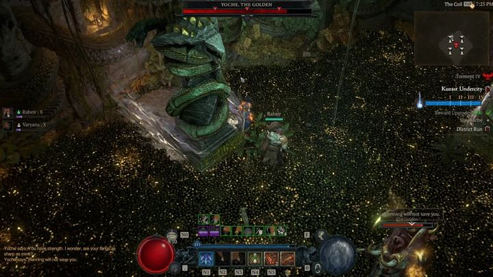
D4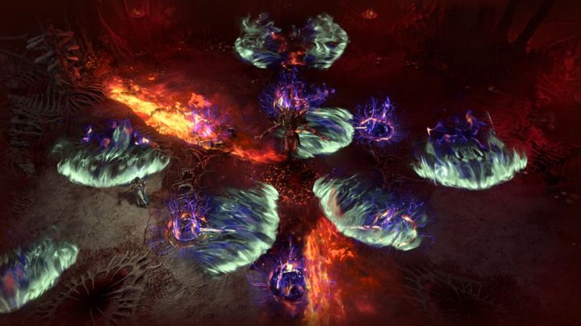
D4 D4
D4ב-D4 הזירה עצמה כהה ומעט רוויה, ולכן ההתרעות וה-VFX (אדום, סגול, ירוק) קופצים מיד. אצלנו הזירה כבר צבועה בגוון חזק (חום-אדום, או ירוק בשלב II), וההתרעות מתחרות ברקע. שלב II עם הערפל הירוק הוא הרגע הכי 'D4' שלנו, כי האווירה מתחלפת.
ב-D4 לזירה יש צורה (עיגול, טבעת, במה) שמספרת איפה נלחמים, והבוס גדול ביחס לגיבור. אצלנו זירת ה-Gravelord היא חדר מלבני עם קשתות על הקיר, והבוס לא דומיננטי בגודל. בזירת ההורדה יש קברים ומדורות מפוזרים על קרקע חלקה בלי גבול ברור.
ב-D4 כל בוס מקבל חתימה ויזואלית (זהב, דם, אש סגולה) שחוזרת בזירה, ב-VFX ובאור. אצלנו יש התחלה טובה (שרשראות, רשת עצמות, ערפל), אבל רק בשלב II, ובשלב I הזירה גנרית.
- פס החיים, שם הבוס ומסך ה-Phase II מעוצבים ברמה טובה
- שינוי אווירה בין שלבים (ערפל ירוק ושרשראות) הוא כיוון נכון
- ה-VFX של הכישורים (קשת להב, מטאור) חזקים וקריאים
- הזירה מלבנית וגנרית, בלי צורה שמגדירה את הקרב
- הבוס קטן מדי ביחס לגיבור ולזירה
- גרייד הזירה מתחרה בהתרעות במקום לתת להן לבלוט
- בזירת ההורדה הקרקע ריקה ואין גבול
- לעצב לכל בוס זירה עגולה או מוגדרת עם קצה ברור (תהום, עמודים, טבעת רונות) ולהשאיר את המרכז נקי
- להחשיך ולהוריד רוויה ברצפת הזירה כדי שההתרעות יהיו הצבע החזק ביותר
- להגדיל את הבוס ל-2.5–3 פעמים גובה הגיבור, ולתת לו אור משלו (rim light)
- חתימת צבע לכל בוס שחוזרת בזירה, ב-VFX וב-UI
- להתחיל כבר בשלב I עם חלק מהקלאטר של שלב II (עצמות, שרשראות)
העולם הפתוח הקודם: The Land of Darkness (סבבים 10–12)
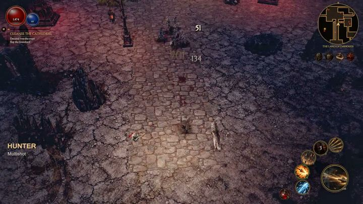
Ashborn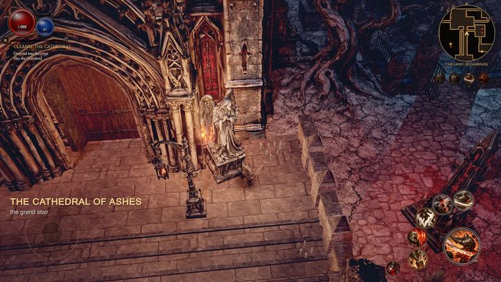
Ashborn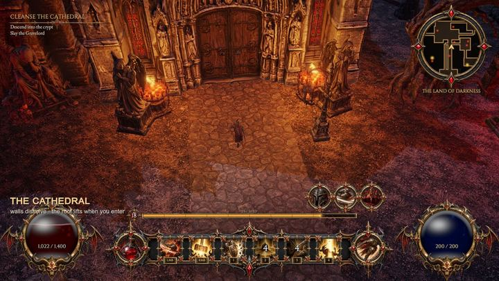
Ashborn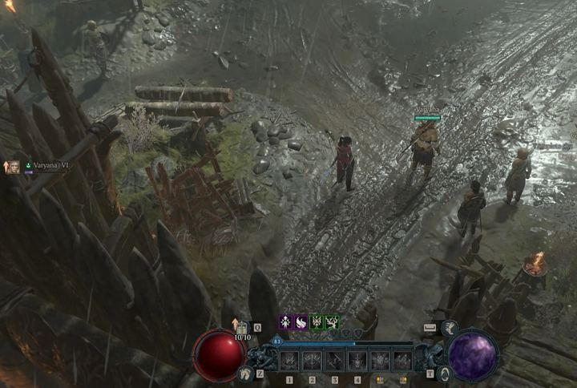
D4 D4
D4 D4
D4ב-D4 הקרקע של העולם הפתוח מורכבת מכמה שכבות חומר (בוץ, עשב, אבנים, תלמים), והמעבר ביניהן רך. אצלנו טקסטורת אדמה סדוקה אחת חוזרת על כל השטח, והשביל הוא מלבן אבנים עם קצה ישר. הגוון הוורוד-סגול נראה מלאכותי, ולא כמו לילה או ערפל.
הפרופים בעולם הפתוח מעטים וזהים (סלעים קוצניים, עמודי פנס), ומפוזרים רחוק זה מזה. ב-D4 יש גדרות, עגלות, עצים מתים, חורבות וקירות נמוכים שמובילים את העין לאורך הדרך. מבני הקתדרלה אצלנו טובים, אבל השטח שביניהם ריק.
ב-D4 העולם הפתוח מספר סיפור: גופות על הדרך, מחנות, עשן מבתים, ציפורים. אצלנו הדרך ריקה מלבד אויבים, ואין ערפל מרחק או שינוי תאורה לאורך המסלול.
- הקתדרלה והשער הגותי בכניסה הם עוגן ויזואלי חזק
- מסלול ברור: דרך, קתדרלה, קריפטה, ושערים שנפתחים אחרי שמגיעים אליהם ברגל
- מספרי הנזק וה-UI קריאים
- קרקע אחת חוזרת, בלי שכבות ובלי מעברים
- שביל מלבני עם קצוות ישרים
- שטחים ריקים בין נקודות העניין
- גוון סגול-ורוד שנראה כמו פילטר
- Terrain עם 3–4 שכבות (בוץ, עשב מת, חצץ, אבנים) ו-splat מצויר לאורך הדרך
- לשבור את קצה השביל: אבנים חסרות, עשב שחודר, ותלמי עגלות
- Prop-scatter לאורך הדרך: גדרות שבורות, עגלות, עצים מתים, גופות ומוטות
- ערפל מרחק כחלחל ובריכות אור חמות רק בנקודות עניין, במקום גוון כללי
- להוסיף 'וינייטות' סיפור כל 20–30 מטר (מחנה נטוש, תלויים, עגלה הפוכה)
העיר הלבנה Aurelmont (Vharn) בלילה, לפני העיר החופית
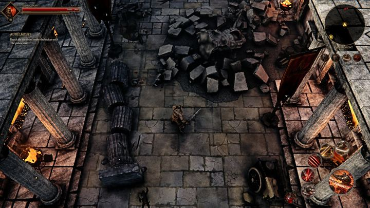
Ashborn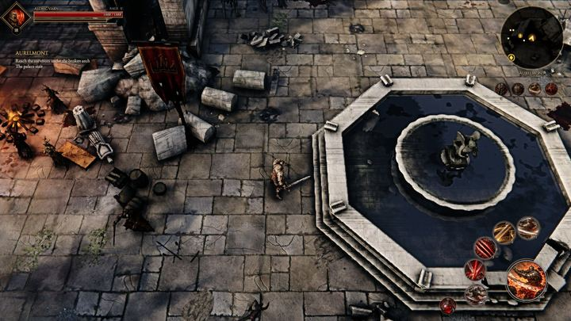
Ashborn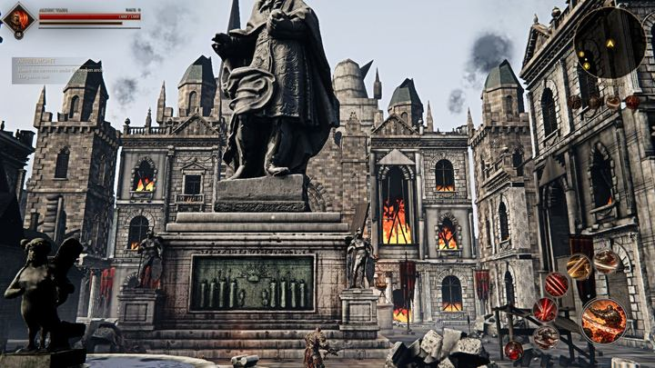
Ashborn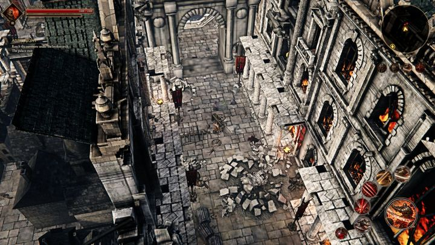
Ashborn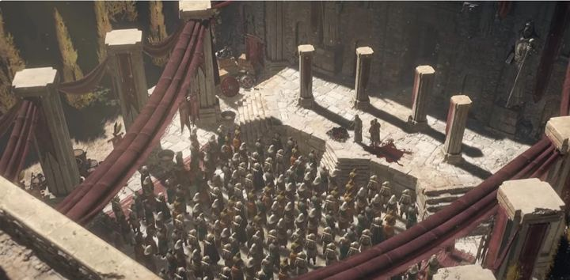
D4 D4
D4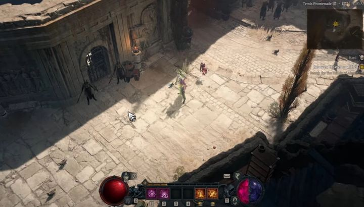
D4במבט נמוך ובמבט-על (פסל, שדרה) העיר נראית מרשימה: חזיתות מפורטות, אש בחלונות וצללים. אבל במצלמת המשחק 70% מהפריים הוא רצפת אריחים גדולים באותו אפור-בינוני, בלי רטיבות, השתקפויות או לכלוך. ב-D4 גם עיר לבנה מקבלת ערכים כהים בבסיס הקירות, ורצפה רטובה שמחזירה את אור האש.
קיט החזיתות והפסל ברמה טובה. ההריסות (ערמות אבנים, תופי עמודים) מונחות כאיים באמצע הרחוב ונראות כמו 'דקורציה'. ב-D4 ההריסות נשענות על קירות, והבדים, העגלות והחביות צפופים בשוליים.
יש אש בחלונות, באנרים ודם, אבל העיר ריקה מאנשים, ואין גשם על הרצפה, עשן מהשריפות או אפר באוויר. המצור שמתואר בבריף לא מורגש במצלמת המשחק, רק במבטים הרחוקים.
- פסל המלך והחזיתות הבוערות במבט נמוך: WOW אמיתי
- המזרקה המתומנת וקשתות הקתדרלה
- מבט-העל על השדרה, עם עומק, חלונות בוערים ושכבות גובה
- במצלמת המשחק רואים בעיקר רצפת אריחים אפורה אחידה
- הריסות כאיים במרכז ולא לאורך הקירות
- אין רטיבות, עשן או אפר, אז הלילה והמצור לא מורגשים
- העיר ריקה מ-NPC והמון
- רצפה רטובה: roughness נמוך יותר בשקעים ושלוליות עם SSR או probes שמחזירים את אור האש
- להעביר הריסות לבסיס הקירות ולהוסיף grime/AO בגובה 0–1 מטר על כל חזית
- עשן מהחלונות הבוערים ואפר נופל, שכבה זולה עם השפעה גדולה
- קבוצות פליטים או גופות בכיכרות כדי לספר את המצור
- להקטין את האריחים או לערבב 2–3 סוגי ריצוף ולשבור את הרשת
העיר הנוכחית: טמיס (T38–T47), בקצרה
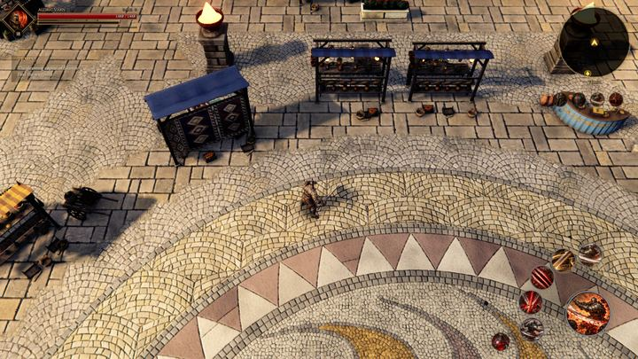
Ashborn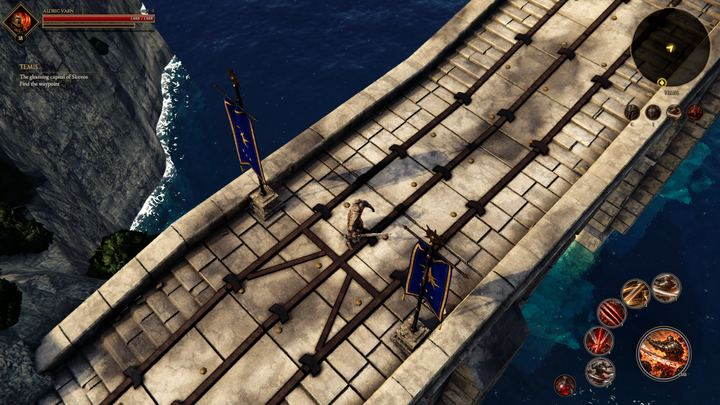
Ashborn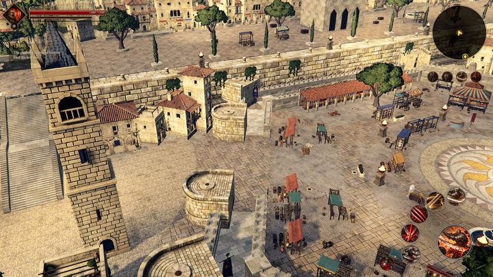
Ashborn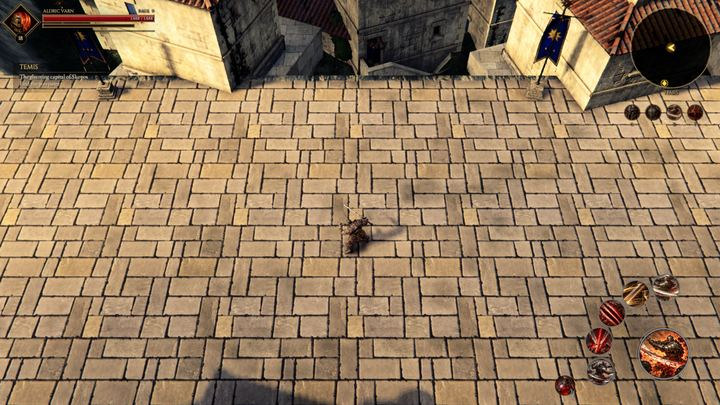
Ashborn D4
D4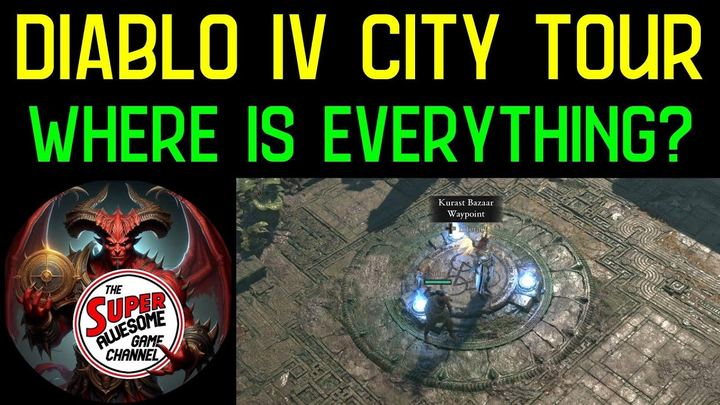
D4בצהריים עם שמש חזיתית ו-ambient מלא, הריצוף הבהיר נשרף לערך אחד ואין עומק (וזה גם מה שנמצא ב-T045). ב-D4 Temis משתמשת בשמש צדדית נמוכה, צללים קרים ארוכים מקירות גבוהים, ולכלוך בכל מפגש בין קיר לרצפה.
הגגות, הפסלים, הפסיפס והגשר טובים, וממבט-על העיר משכנעת. במצלמת המשחק רחובות שלמים הם ריצוף בלבד, והפרופים (דוכנים, באנרים) מעטים ורחוקים זה מזה.
אין אנשים, אין ציפורים או בדים בתנועה, ואין אובך ים. העיר נראית כמו מודל אדריכלי ולא כמו מקום חי.
- פסיפס ההאב והפסלים בכניסה מהים
- הגשר והים, עם מים וצוקים איכותיים
- מבט-העל: גגות רעפים וצמחייה נותנים אמינות
- שמש חזיתית שורפת את הריצוף ומשטיחה את התמונה
- רחובות ריקים במצלמת המשחק
- אין NPCs ואין חיים
- שמש צדדית נמוכה, צללים קרים וחשיפה נמוכה ב-0.5–1 EV (לפי ההערות של T045/T046)
- קלאטר בבסיס כל קיר: עציצים, ארגזים, בדים, לכלוך ו-AO
- 20–40 NPCs פשוטים בהאב ובשוק, גם אם הם סטטיים
- אובך ים קל ושחפים או בדים מתנופפים בשביל תנועה
עולם פתוח
7 אזורי Sanctuary — מהפסגות המושלגות ועד ארכיפלג סקובוס
| # | אזור | ביומה | בירה | מאמץ ל-Ashborn |
|---|---|---|---|---|
| A1 | Fractured Peaks (הפסגות השבורות) | הרים מושלגים | Kyovashad | L |
| A2 | Scosglen (סקוסגלן) | קלטי-סקוטי: יערות עבותים ורטובים | Cerrigar | M |
| A3 | Dry Steppes (הערבות היבשות) | ערבות יבשות וקניונים בהשראה מונגולית-מרכז אסייתית | Ked Bardu | M |
| A4 | Kehjistan (קהג'יסטן) | מדבר וחוף ים בהשראה מזרח-תיכונית/פרסית: חורבות אימפריה | Gea Kul | M |
| A5 | Hawezar (הוואזאר) | ביצה טרופית-אפלה עם עצים מעוותים | Zarbinzet | M-L |
| A6 | Nahantu (Vessel of Hatred) (נהאנטו) | ג'ונגל עבות ולח עם מפלים | Kurast | L |
| A7 | Skovos (Lord of Hatred) (סקובוס) | ארכיפלג יווני-מיתי | Temis | M |
Fractured Peaks

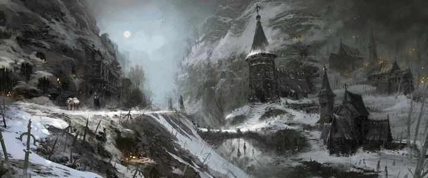


מה רואים בכל תמונה (6)
הרים מושלגים, סופות שלג, יערות אורן מתים, כפרים מבודדים. מזרח-אירופה גותית/אורתודוקסית, דתית, קרה ומדכאת. זה האזור הראשון ו'כרטיס הביקור' של D4.
לבן-אפור כחלחל, אבן כהה, עץ חום-שחור, ניגוד חם של לפידים וחלונות כתומים, אדום דם על שלג.
אבן גותית עם גגות עץ תלולים, כנסיות עם כיפות/צריחים, חומות עץ ואבן, גשרים מעל תהומות, פסלי קדושים, צלבים של Cathedral of Light, מוטות עם גופות, מחנות עם אוהלים, עגלות שבורות.
בירה: Kyovashad. עיירות: Nevesk, Yelesna, Menestad, Nostrava (מבצר), Kor Dragan (מבצר-טירה של ערפדים).
Kor Valar (מבצר Cathedral of Light), Light's Watch, Icehowl Taiga, Frigid Expanse, The Crucible (זירת בוס עולם), Cathedral of Light.
ערכת כפר הררי מושלג: 6-8 בתי אבן+עץ מודולריים, כנסייה קטנה, חומת עץ+שער, גשר, אורנים מושלגים, שכבת שלג/ערפל, חומרי שלג על קרקע ואבנים. צריך shader שלג וחלקיקים. פלטה קרה משלימה טוב את Aurelmont החמה.
A1.1בירה: Kyovashadקיובשאד


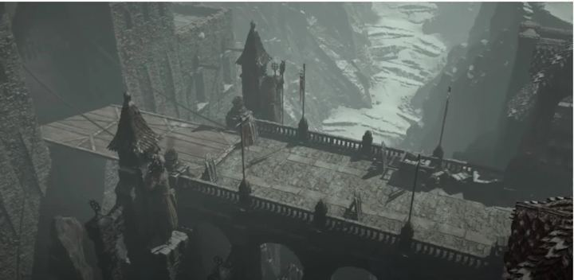

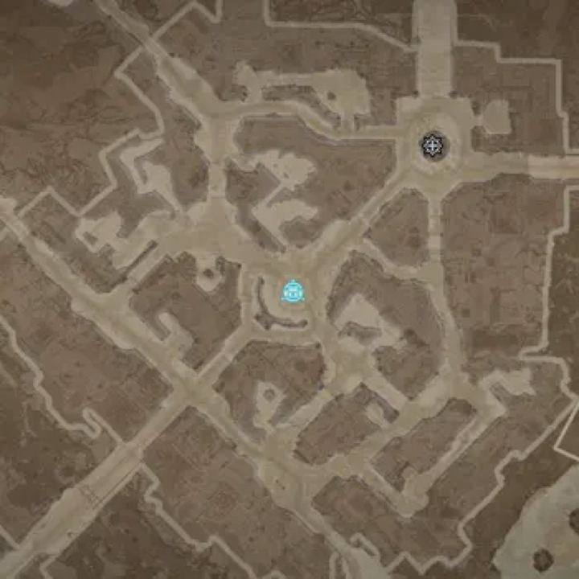
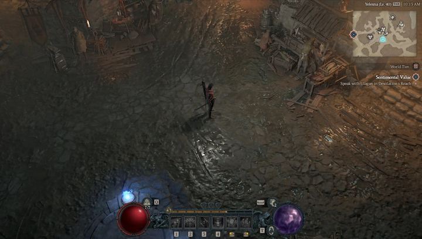
מה רואים בכל תמונה (7)
עיר מבצר מוקפת חומות על צוק, ונכנסים אליה דרך גשר אבן ושער מבוצר. במרכז נמצאת מטה ה-Cathedral of Light. בתי אבן ועץ צפופים, שכונת עוני, כיכר עם waypoint. מבחינת פריסה יש ציר ראשי משער לכיכר וסמטאות היקפיות. היא הייתה ה-hub הראשי עד שהגיעה Temis.
ל-Ashborn: שער+גשר מבוצר הוא פריט 'וואו' זול יחסית. אפשר לשלב עם ה-cathedral pieces הקיימים. מאמץ: L לעיר מלאה, M לשער+כיכר בלבד.
Scosglen
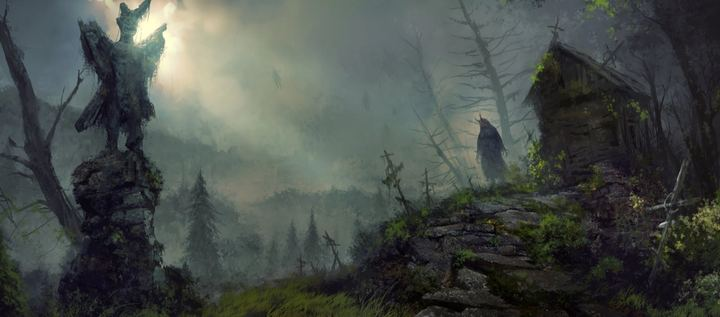


מה רואים בכל תמונה (4)
קלטי-סקוטי: יערות עבותים ורטובים, ערפל, צוקי חוף, הרים ירוקים, מקדשי דרואידים, זאבי-אדם ושבטי Drowned. מיסטי, רטוב ופראי.
ירוק כהה ואזוב, אפור-כחול של ים וסלעים, חום עץ, נגיעות זהב-סתיו, קרני אור דרך ערפל.
מגדלי אבן עגולים, בתי אבן עם גגות קש, פסלי דרואידים ענקיים, אבני רונות, מעגלי אבן, עצי אלון ענקיים, מזחי עץ, ספינות שבורות על החוף.
בירה: Cerrigar (עיירת חוף). עיירות: Braestaig (הרוסה), Tirmair, Marowen (נמל), Corbach, Firebreak Manor.
Túr Dúlra (המכללה הדרואידית הראשונה, עם האלון הענק), Caen Adar (זירת בוס עולם), חופי Drowned, יער Emerald Chase.
החוף הסלעי עם מזחי עץ ו-Drowned מתחבר ישר לנמל של Aurelmont ולים (T21). צריך: צוקים מודולריים, עצים עבותים+אזוב, בתי קש, מעגל אבנים, פסל דרואיד. Poly Haven מתאים מאוד לסלעים וליער.
A2.1בירה: Cerrigarסריגאר

מה רואים בכל תמונה (2)
עיירת חוף מוקפת חומת אבן נמוכה עם בתי אבן וגגות קש. הרחובות מתפתלים ויש כיכר מרכזית. היא נבנתה מחדש אחרי ש-Astaroth החריב אותה, בעזרת מכשפי High Forest. העיר קטנה וצפופה, עם אווירה של דייגים ודרואידים.
ל-Ashborn: עיירת קש ואבן קטנה (15-20 מבנים) על בסיס ערכת האבן של Aurelmont והחלפת גגות. מאמץ: M.
Dry Steppes
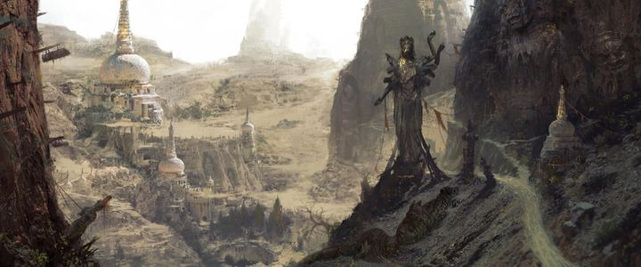

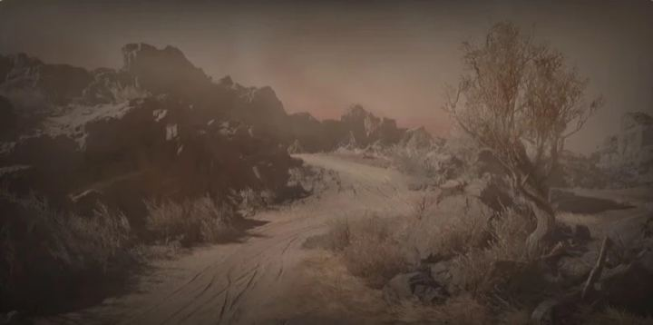
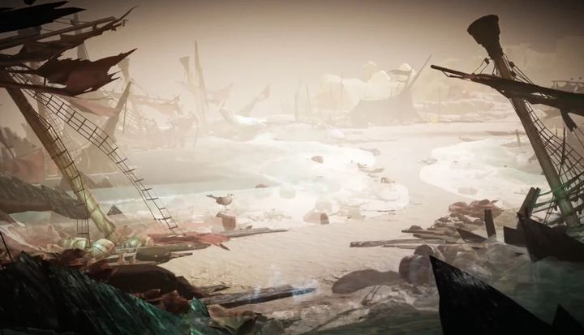

מה רואים בכל תמונה (6)
ערבות יבשות וקניונים בהשראה מונגולית-מרכז אסייתית, עם שבטים קניבלים, מכרות, מלחות ושממה. אכזרי, מאובק ורחב.
חום-אוקר, צהוב יבש, אפור אבן, אדום דם (מלחות ו-Lilith), שמיים לבנים-עכורים.
יורטות ואוהלי עור, מבני בוץ ואבן, מקדשי Zakarum נטושים, מגדלי שמירה מעץ, עצמות ענק, כלובים, מוטות שבטיים, מכרות.
בירה: Ked Bardu. עיירות: Guulrahn (הבירה ההיסטורית, הרוסה), Jirandai, Tarsarak (עם Kuhuthi's Tavern).
Orbei Monastery (מנזר Zakarum), Ruins of Qara-Yisu ו-Temple of Rot (מבצרים), Saraan Caldera (זירת בוס עולם), מלחות.
ביומת 'שממה' זולה: שטח פתוח עם סלעים, יורטות, עצמות ענק ואוהלים. הרבה שטח עם מעט נכסים, אז זה טוב לבדיקת ביצועים ולמבחני קרב. מאמץ: M.
A3.1בירה: Ked Barduקד בארדו
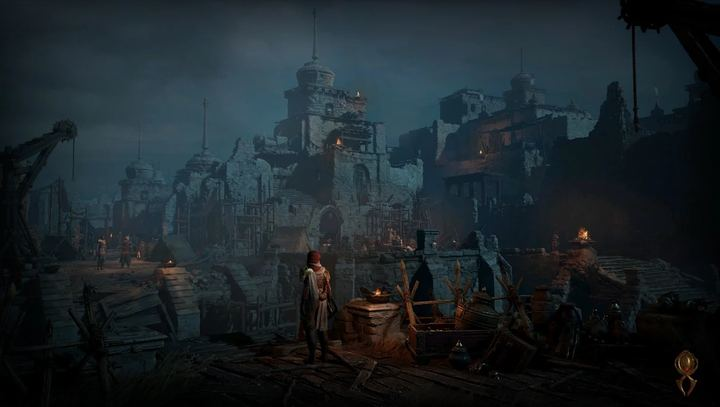

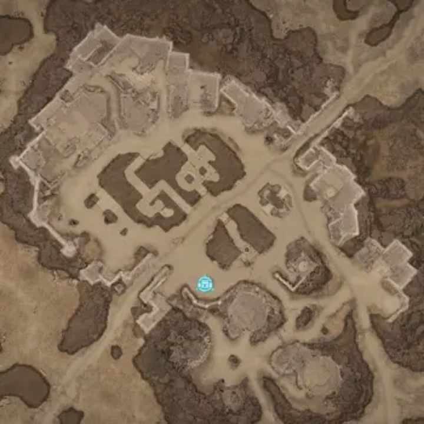

מה רואים בכל תמונה (4)
עיר-שוק מוקפת חומות בערבות Kotama, ולה שלוש כניסות. מסביב לסלע מרכזי יש אוהלים, דוכני שוק וסדנאות מתכת של שבט ה-Oxen. האווירה היא של שוק נוודים.
ל-Ashborn: דוכני שוק, יורטות וחומת עץ ובוץ. זה זול יחסית וטוב ל-hub שני. מאמץ: M.
Kehjistan


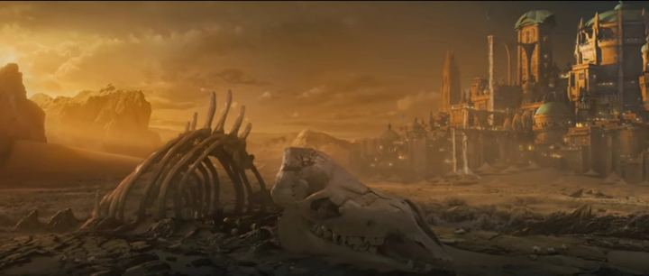
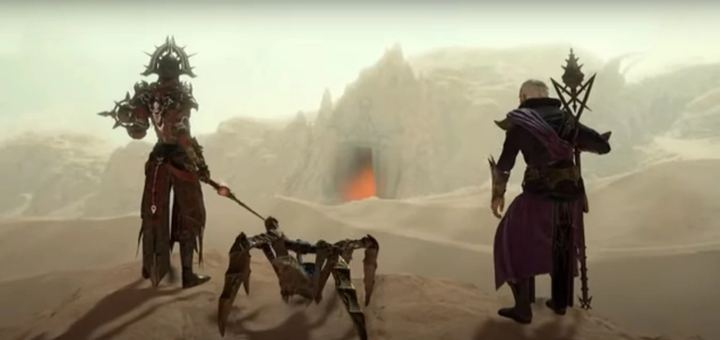
מה רואים בכל תמונה (5)
מדבר וחוף ים בהשראה מזרח-תיכונית/פרסית: חורבות אימפריה, דיונות, ערוצים, עיר נמל. שרב, אבק ומסתורין.
חול זהוב, טרקוטה, כחול-טורקיז של ים ואריחים, לבן-גיר, צללים סגולים.
קשתות מחודדות, כיפות, אריחים, בתי בוץ ואבן לבנה, מזחים ונמל, שווקים מקורים בבד, ארמונות הרוסים של Caldeum, ספריות וקברים של Horadrim.
בירה: Gea Kul (עיר נמל). עיירות: Alcarnus, מחנה Iron Wolves, ו-Caldeum ההרוסה (רואים אותה מרחוק).
Seared Basin (זירת בוס עולם), חורבות Caldeum, קברים מדבריים (Tomb of Hallows), Ruins of Rakhat Keep.
Gea Kul היא עיר נמל, אותו קונספט כמו Aurelmont בסגנון אחר. רוב הלוגיקה (מזח, ים, מים) כבר קיימת, וצריך רק להחליף את ערכת המבנים לבוץ, קשתות ובד. מאמץ: M.
A4.1בירה: Gea Kulגאה קול
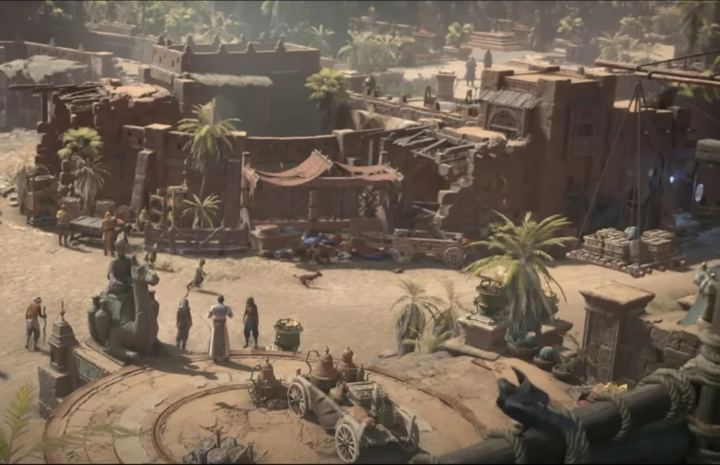

מה רואים בכל תמונה (3)
עיר נמל מצפון ל-Kurast, מעבר לנהר. מזחים ארוכים יוצאים לים, וברחובות צרים יש סוככי בד, דוכני דגים ומדרגות. ריח הים והדגים בכל מקום. במפה רואים שהפריסה היא ריבוע עירוני צפוף עם 'אצבעות' של מזחים לים.
ל-Ashborn: להשתמש בתשתית הים והנמל של Aurelmont ולבנות ערכת 'נמל מדברי' (בוץ, קשתות, בד). מאמץ: M.
Hawezar


מה רואים בכל תמונה (3)
ביצה טרופית-אפלה עם עצים מעוותים, מים עומדים, נחשים (Ophidians), מכשפות ואנשי ביצה, ושרידי מסע צלב של Zakarum. חונק, רקוב ומכושף.
ירוק-חום עכור, טורקיז רעיל, כתום לפידים, ערפל צהבהב, שחור של בוץ.
בקתות על כלונסאות, גשרי עץ ומעברי קרשים, מקדשי נחש אבן, מבצרי Zakarum נטושים, טוטמים, עצי מנגרובים, סירות.
בירה: Zarbinzet. עיירות ונקודות: Wejinhani, Backwater, Ruins of Eridu.
Tree of Whispers (עץ ענק עם ראשים תלויים, ה-hub של Whispers), Fields of Desecration (זירת בוס עולם), Crusader's Monument (מבצר), Light's Refuge (מבוך).
Tree of Whispers הוא landmark יחיד וחזק שאפשר לבנות כסצנה אחת (S-M). ביומת ביצה (מים רדודים, מנגרובים, קרשים) יכולה להשתמש ב-shader המים הקיים. מאמץ: M-L.
A5.1בירה: Zarbinzetזרבינזט


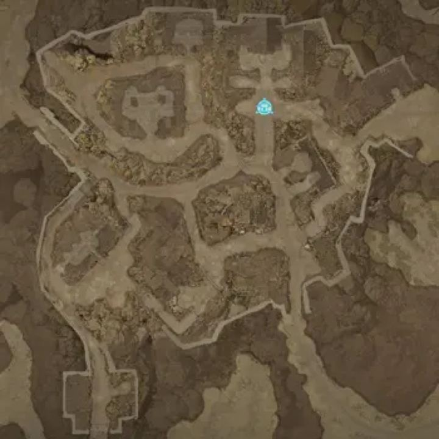
מה רואים בכל תמונה (3)
עיר מוקפת חומות בתוך הביצה, שמחזיקה מעמד בזכות חיל מצב של צלבני Zakarum. מבני עץ ואבן כבדים, באנרים ולפידים, והכול טחוב. בפריסה יש מתחם מבוצר וכיכר מרכזית.
ל-Ashborn: מבנה 'עיר צלבנית בביצה' מתחבר ל-cathedral pieces. מאמץ: M. לא נמצאו צילומי עיתונות איכותיים של Zarbinzet, אז השתמשתי בתמונות ממוזערות מ-YouTube.
Nahantu (Vessel of Hatred)

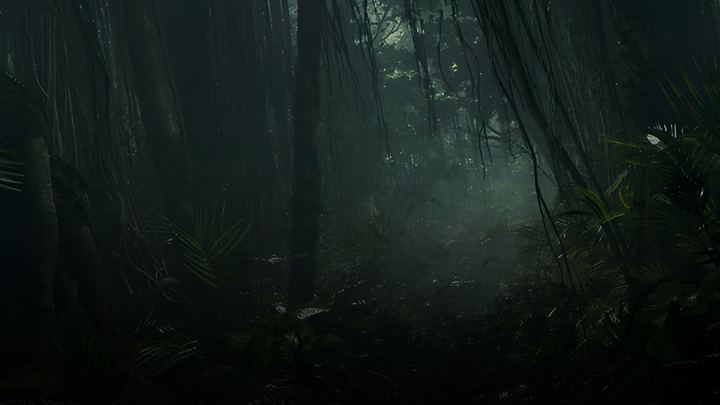


מה רואים בכל תמונה (6)
ג'ונגל עבות ולח עם מפלים, מקדשים עתיקים ושבטים. בלב שלו Kurast, עיר גדולה ומרקיבה. ירוק, מסוכן ומלא סודות. ההשראה דרום-מזרח אסייתית/מסו-אמריקנית.
ירוק עמוק ואמרלד, אבן אפורה-ירקרקה, זהב עמום, טורקיז מים, כתום-אש של לפידים, סגול-אדום של שנאה (Mephisto).
זיגורטים ומקדשים מדורגים, שערי אבן ענקיים, גשרי חבלים, בקתות עץ וקש, תעלות ורציפים, פסלי אלים מכוסים צמחייה, שורשים ענקיים, מדרגות אבן.
בירה: Kurast (Kurast Bazaar, Kurast Docks). נקודות: Torajan Jungles, ה-Den (מחבוא שכירי החרב), Temple of the Primes (Spiritborn).
Kurast Undercity (מתחת לעיר), כניסת ה-Dark Citadel, מקדשי הג'ונגל, מפלים ושערי אבן.
שער אבן ענק עם מפלים (כמו בתמונה הראשונה) הוא landmark חזק. צריך ערכת ג'ונגל מלאה (עצים, שורשים, שרכים, ליאנות) שהיא כבדה מבחינת foliage וביצועים. ערכת מקדש מדורג יכולה לשמש גם במבוכים. מאמץ: L.
A6.1בירה: Kurastקוראסט
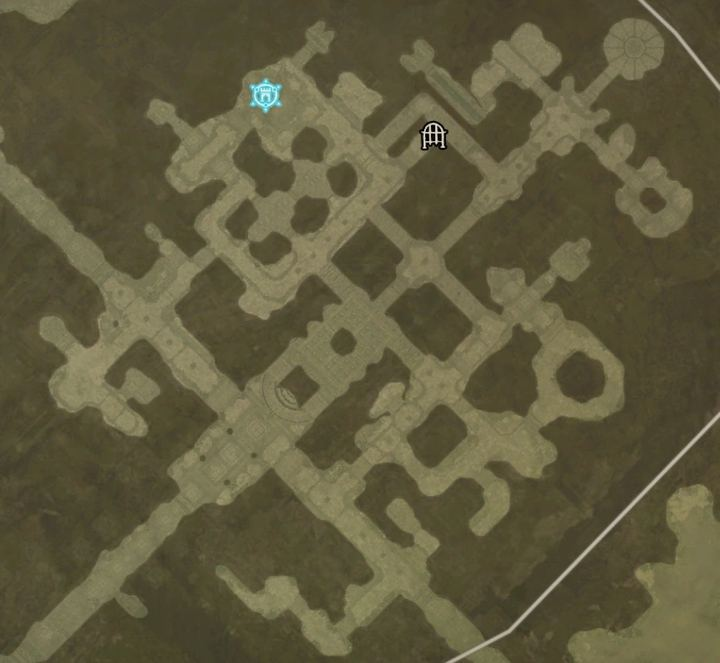

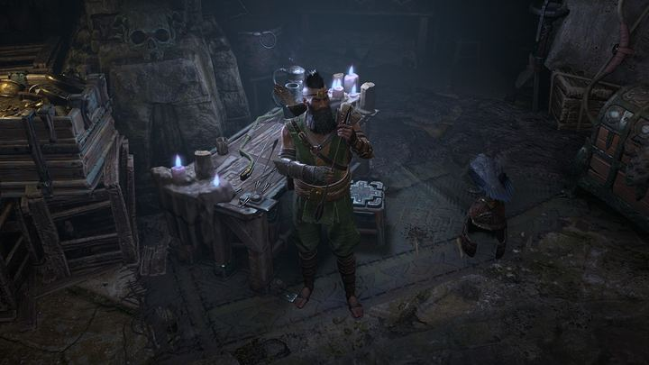
מה רואים בכל תמונה (4)
עיר ענק מרקיבה בלב הג'ונגל, הבירה לשעבר של Kehjistan. יש בה שוק (Bazaar) עם רשת רחובות כמעט אורתוגונלית, רציפים ותעלות, ושכונות על כלונסאות. מתחתיה נמצאת ה-Undercity. ה-Den של שכירי החרב הוא hub משני מחתרתי.
ל-Ashborn: הרשת האורתוגונלית במפה נוחה לבנייה מודולרית. ה-Den (מערה עם מחנה ונרות) הוא פרויקט S-M שמתאים ל-hub קטן.
Skovos (Lord of Hatred)

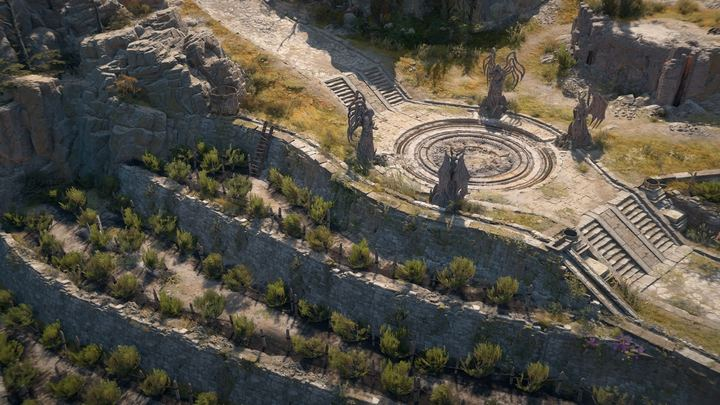
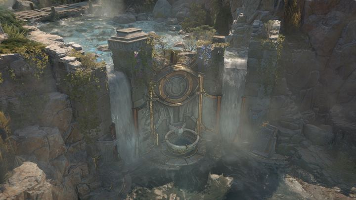

מה רואים בכל תמונה (6)
ארכיפלג יווני-מיתי, 'ערש האנושות' ומולדת ה-Askari/Amazons. חופים בהירים, צוקי שיש, יערות סתיו, אדמות שקועות במזרח-מרכז ווולקני במערב (Skartara). זה האזור הכי גדול שנבנה ל-D4, והוא בהיר יותר מכל השאר, עם מבוכי עצמות סוריאליסטיים.
שיש לבן-שמנת, טורקיז ים, ירוק זית, כתום-אדום סתיו, זהב, ובמערב שחור-בזלת עם לבה אדומה.
מקדשים יווניים, פסלי ענק (Blessed Mother ו-Heavenly Father), אמפיתיאטרון מדורג, שערים בצוקים, מדרגות ענק, עמודים הרוסים, ספינות.
בירה: Temis (hub המשחק המאוחר). תת-אזורים: Philios (waypoint Vision's End), Lycander (Temple of Life), Athulua (Athulua Garrison), Atanos, Celestia (Tyrael's Encampment), Skartara (וולקני). חלק מהמקורות מונים 11 תת-אזורים ומוסיפים Cetos, Xanderos, Saltwind ו-Cosmic Archives.
Chronicles of Creation (פסלים במחבוא ברחבי האי), זירת בוס העולם הוולקנית, מבצרי Saltwind ו-Xanderos, ה-Sightless Eye.
כבר יש לנו את Temis. השלב הטבעי הבא הוא 'הטבע סביב Temis': חוף, מפרץ ולגונה, טרסות ועמודים הרוסים, אותו שיש. רוב החומרים כבר קיימים. מאמץ: M. Skartara הוולקני בנפרד: M-L.
A7.1בירה: Temisטמיס


מה רואים בכל תמונה (18)
עיר שיש על הר מעל הים, הבירה של ה-Askari. Blizzard תכננו אותה כ-hub האידיאלי למשחק המאוחר: שולחן הפיקוד של War Plans, ה-Pit ו-Echoing Hatred, כולם במרחק הליכה קצר. יש בה פסלי ענק של Blessed Mother ו-Heavenly Father, כיכרות (Plaza of Queens, Promenade) וביוב/קטקומבות של עיר Firstborn קדומה שעליה נבנתה.
ל-Ashborn: כבר בעבודה ב-Ashborn (T38). ההמשך המתבקש: Temis Sewers מתחת לעיר, שהיא מבוך שמשתמש באותה אבן (ראו המלצות).
מבוכים
~150 מבוכים, בנויים מ-10 ערכות חוזרות
ב-D4 יש בערך 150 מבוכים רגילים, אבל כולם בנויים מכ-10 ערכות חזרתיות. כאן הערכות, לא כל מבוך בנפרד.
מרתפים ומערות קטנות


מה רואים בכל תמונה (3)
חדר או שניים עם קורות עץ, חביות, ארגזים ונרות. מרתף מתחת לבית או מערה קטנה עם קבוצת אויבים אחת או בוס קטן.
ליניארי קצר, חדר אחד עד שלושה, 2-5 דקות. זה 'פופ-אין' מהעולם הפתוח.
כניסה מדלת מרתף בעולם, אור לפידים חם, תיבת אוצר בסוף.
גבוה מאוד, אפשר לפזר עשרות כאלה בכל אזור עם ערכה אחת.
קריפטות, קטקומבות וקברים

מה רואים בכל תמונה (4)
מסדרונות אבן עם גומחות קבורה, ארונות אבן, גולגלות ועצמות, נרות, פסלי שומרים וקשתות נמוכות. כהה עם כיסי אור חמים.
ליניארי-מסועף: מסדרונות שמחברים 3-5 חדרים, עם קשת חסומה עד שמשלימים מטרה (מפתח/מכונה), ואז זירת בוס.
דלתות שנפתחות אחרי מטרה, ארונות קבורה שמתעוררים, 'מסדרון גולגלות'.
גבוה מאוד. זו ערכת המבוך הנפוצה ביותר ב-D4 והיא מתאימה לכל אזור עם החלפת חומרים.
מערות קרח ומבצרים קפואים


מה רואים בכל תמונה (4)
מערות קרח כחולות, נטיפים, שלג נכנס דרך פתחים, מבני אבן גותיים קפואים (Black Asylum, Icehowl Ruins).
ליניארי עם לולאות, מעבר בין מערה טבעית לחדרי מבנה.
אור כחול-קר מול לפידים כתומים, קרח שקוף, גופות קפואות.
בינוני, תלוי בבניית Fractured Peaks.
מערות דרואידים, מכרות ויערות סגורים


מה רואים בכל תמונה (4)
מערות סלע חומות עם שורשים, פיגומי עץ ומסילות מכרה, חפצי דרואידים, יער סגור בערפל קסום.
ליניארי עם צמתים, ב'יער סגור' (holt) גם שבילים מעגליים.
מסילות וקרונות, שורשים שחוסמים מעבר, ערפל שמסתיר את המסלול.
גבוה, מערה גנרית מתאימה לכל ביומה.
חורבות מדבר, ערים תת-קרקעיות וספריות


מה רואים בכל תמונה (4)
ערים עתיקות תת-קרקעיות, אולמות עמודים, ספריות Horadrim עם מדפים ושולחנות, אבן חול ופסלים.
חדרים גדולים פתוחים (hall) שמחוברים במסדרונות. ב-City of the Ancients יש גם פורטל/שער ענק בקצה.
שער פורטל אדום ענק, ספרים ושולחנות כתיבה, ארכיטקטורה מונומנטלית.
בינוני-גבוה. 'ספרייה/ארכיון' משתלב עם Skovos (Sunken Library, Cosmic Archives).
כנסיות וקתדרלות (Zakarum / Cathedral of Light)


מה רואים בכל תמונה (4)
ספינות קתדרלה עם עמודים, פסיפס רצפה עגול, ספסלים, ויטראז'ים, באנרים, פסלי מלאכים וצלבים. באחוזות גותיות יש שריונות, כידונים ונברשות.
ציר ספינה מרכזי עם צדדים, ובסוף מזבח/זירת בוס. באחוזה: קומות עליונות גותיות וקומות תחתונות מוצפות.
פסיפס רצפה עגול גדול, אור שמיים דרך חלונות, מעבר מקדושה לטומאה.
גבוה מאוד ל-Ashborn, כי כבר יש cathedral pieces.
מבוכי ביצה (Hawezar)
מה רואים בכל תמונה (2)
מקדשי נחש מוצפים, מוזוליאומים מאבן ירקרקה, מים עומדים בחדרים, שורשים, ערפל רעיל.
ליניארי עם קטעי מים רדודים.
מים בתוך החדרים, צמחייה שפורצת מבעד לאבן.
בינוני. 'קריפטה מוצפת' היא וריאנט של ערכת הקריפטה עם מישור מים.
הגיהנום (Burning Hells)


מה רואים בכל תמונה (7)
אדמה שחורה סדוקה עם לבה, בשר ועצמות, קוצים ענקיים, שמיים אדומים, שערים בצורת קרניים, מבני אובסידיאן.
זירות פתוחות שמחוברות בגשרים ומעברים. הרבה פעמים מעגלי (arena chain).
תאורה אדומה-כתומה מלמטה, ערפל אדום, אלמנטים אורגניים (בשר/עור).
גבוה. משמש גם ל-Helltide, Pit, Infernal Hordes, Dark Citadel וזירות בוס. משתלב עם ה-dungeon mockup הקיים (שער קרניים ושד בערפל).
מבוכי ג'ונגל ומקדשים (Nahantu)
מה רואים בכל תמונה (3)
מקדשים מכוסים שורשים, אבן ירקרקה, מים ומפלים בפנים, פסלי נחש ואלים.
ליניארי עם מעברים בין חוץ (ג'ונגל) לפנים (מקדש).
שורשי עצים שבוקעים מהקירות, אור ירוק מסונן.
בינוני, דורש ערכת ג'ונגל.
מבוכי סקובוס


מה רואים בכל תמונה (7)
ביוב וקטקומבות מתחת ל-Temis (שרידי עיר Firstborn), מערות עם פסלים, מבוכי עצמות סוריאליסטיים, חלקים שקועים במים עם זרועות-תמנון.
ליניארי-מסועף. ה-Sightless Eye הוא מבוך 'מנטלי' שמשתנה לאורך הקמפיין.
מים, עצמות ענק, פסלים שקועים, תאורת לפידים חמה על שיש ואבן.
גבוה מאוד ל-Ashborn, כי זה מבוך שנמצא ממש מתחת ל-Temis שכבר בעבודה.
מבוכי Skovos לפי תת-אזור: Temis: The Aegoye. Philios: Seer's Reach, Grim Haven. Lycander: Tormented Forest, Dark Refuge. Athulua: Bewitched Grotto. Atanos: The Hinterland, Refuge of the Lost. Skartara: Cataclysm, Scorched Tunnels. Celestia: לפי חלק מהמקורות Basaltic Ascent, ולפי אחרים אין שם מבוך. בוויקי מופיעים גם Belfry Zakara, Earthen Wound, Sunken Library, Farai Cliffs ו-Hellbreach Dungeon. רשימות המקורות לא תמיד מסכימות.
Endgame ומיוחדים
Pit, Undercity, Helltide, Strongholds וכל החללים המיוחדים
מבוכי סיוט


מה רואים בכל תמונה (2)
אותם מבוכים רגילים בגרסה 'מקוללת': ערפל אדום, דם, תאורה אדומה, affixes ויזואליים.
כמו המבוך הבסיסי, עם אובייקטים נוספים (Glyph/Obelisk) בסוף.
Sigil מפעיל את המבוך, ומשנה פילטר צבע ו-VFX.
מצוין: זו רק שכבת post-process + VFX מעל מבוכים קיימים.
הבור (The Pit)
מה רואים בכל תמונה (2)
קומות קצרות אקראיות מתוך ערכות המבוכים הקיימות, עם obelisk בכניסה ופורטל לבוס.
רצף קומות (3 בערך) ואז זירת בוס. מוגבל בזמן.
Obelisk ב-Cerrigar (וב-LoH גם ב-Temis), פורטל סגול-שחור.
מצוין: אפשר להרכיב אותו לגמרי מ-tiles קיימים + זירת בוס אחת.
העיר התחתית של קוראסט


מה רואים בכל תמונה (4)
ביוב ומקדשים מתחת ל-Kurast: אבן ירקרקה, מים, זהב, זירות עגולות.
מבוך רב-קומתי מוגבל בזמן (timed), עם Spirit Beacons ומזבחות להארכת הזמן, ובסוף זירת בוס.
טיימר, braziers, ושוחד (Tributes) שמשנה תגמול.
גבוה: מסדרונות + זירה עגולה + מכניקת זמן.
המצודה האפלה


מה רואים בכל תמונה (8)
מבצר אדיר בגיהנום, ירוק-שחור מבחוץ ואדום-גותי מבפנים, עם אולמות ענקיים וזירות בוס.
ראייד לשיתוף פעולה: כנפיים (Enclaves) עם מכניקות של שחקנים מרובים, ואז בוסים.
פאזלים שדורשים שני שחקנים, שערים ענקיים, Conduit of Souls.
נמוך עד בינוני (מכניקות co-op). אבל השער והאולם הגותי-גיהנומי מתאימים מאוד ל-mockup שלנו.
מבצרים (Strongholds)


מה רואים בכל תמונה (3)
עיירה או מבצר בעולם הפתוח שמושחתים: ערפל אדום, דם, אויבים, ובסוף שחרור שהופך את המקום לעיירה עם waypoint.
אזור פתוח בעולם עם 3-4 מטרות ובוס.
שני מצבים לאותה סצנה (מושחת/משוחרר).
מצוין: שימוש חוזר בעיירה קיימת (למשל רובע של Aurelmont) עם שכבת השחתה.
זירות בוסי עולם


מה רואים בכל תמונה (3)
קערה עגולה גדולה ופתוחה בעולם (Crucible, Caen Adar, Saraan Caldera, Seared Basin, Fields of Desecration, וב-Skovos זירה וולקנית).
ארנה עגולה בקוטר עשרות מטרים, פתוחה ל-12 שחקנים.
אין קירות, הגבול טבעי (צוקים). טיימר הופעה במפה.
גבוה: אפשר להשתמש בקערה אחת עם החלפת ביומה.
גאות הגיהנום (Helltide)
מה רואים בכל תמונה (4)
חלק מאזור פתוח שהופך לגיהנום: שמיים אדומים, גשם אש, ערפל אדום, Tortured Gifts (תיבות).
אותה מפה פתוחה עם שכבת אירוע ותחום אזורי.
מעבר אווירה בזמן אמת (תאורה, מזג אוויר, חלקיקים).
מצוין: זה בעיקר 'מצב תאורה + VFX' שאפשר להחיל על Aurelmont או Temis.
ההמונים התופתיים (Infernal Hordes)


מה רואים בכל תמונה (4)
זירה עגולה בגיהנום עם עיגולי בשר וקוצים. גלים של אויבים, ובין הגלים בוחרים 'הצעות' (Boons/Banes).
ארנה אחת וגלים (waves) מתוזמנים, ובסוף בוס (Fell Council / Bartuc).
UI של בחירת הצעות, Aether כמשאב.
מצוין: זירה אחת + spawner. ה-mockup שלנו עם השד בערפל מתאים.
Realmwalker (עונתי)

מה רואים בכל תמונה (1)
יצור-מבנה ענק שהולך בעולם הפתוח ומשאיר שובל, ובסוף פותח פורטל ל-Seething Realm.
אירוע ליווי בעולם הפתוח, ואחריו פורטל לזירת בוס קטנה.
מבנה ענק נע עם פורטל אדום, שובל.
בינוני.
ה-Den (מחבוא שכירי החרב)


מה רואים בכל תמונה (3)
מערה גדולה עם מחנה: נרות, שטיחים, נשק, ארגזים ומדורות. זה hub ולא מבוך.
חלל אחד עם עמדות NPC.
תאורה חמה וצפופה, הרבה props.
גבוה: hub קטן וזול.
משחק מאוחר של Lord of Hatred


מה רואים בכל תמונה (4)
War Plans הוא שולחן פיקוד ב-Temis שבו בונים 'פלייליסט' של עד 5 פעילויות (Pit, Nightmare, Helltide, Infernal Hordes, Lair Bosses, Undercity). Echoing Hatred הוא מצב 'הישרדות' בגלים שמתחזקים בלי סוף, עם מפתח נדיר (Traces of Echoes). מוות מסיים את הריצה.
War Plans: שכבת UI ושולחן ב-hub. Echoing Hatred: ארנה אחת.
hub מרוכז, מסך תכנון, ארנה עם קוטב/מוקד.
גבוה: מתאים ישר ל-Temis שלנו.
חללים עונתיים נוספים

מה רואים בכל תמונה (4)
מבוכי עונה זמניים: כספות מלכודות (Vaults), חדר טקס עם מעגל פורטל (Deathtoll), ומבוך שמשגר בין מבוכים (Endless Gates).
משתנה: ליניארי עם מלכודות, או hub של פורטלים.
מלכודות רצפה, מעגלים זוהרים, טלפורטרים.
בינוני: רעיונות למכניקות.
המלצות ל-Ashborn
5 הבאים — השפעה מול מאמץ
מה כבר קיים: Aurelmont (עיר נמל מאבן), Temis (עיר Skovos), mockup מבוך בסגנון Diablo (שער קרניים, גשר מעל מים, עמודים, שד בערפל), חלקי קתדרלה.
| דירוג | מה | השפעה | מאמץ |
|---|---|---|---|
| 1 | הביוב והקטקומבות מתחת ל-Temis (Temis Sewers / Firstborn catacombs) | גבוה מאוד | M |
| 2 | זירת בוס גיהנומית (בסגנון Pit / Infernal Hordes) (Boss arena + Pit / Infernal-Hordes style hell arena) | גבוה | S-M |
| 3 | מבוך קתדרלה (פנים Cathedral of Light) (Zakarum cathedral dungeon (Cathedral of Light interior)) | גבוה | S-M |
| 4 | חוף והריסות סביב Temis (בסגנון Philios) (Skovos coast & ruins around Temis (Philios-style)) | גבוה | M |
| 5 | עיירת שלג בסגנון Fractured Peaks (שער Kyovashad וכפר) (Fractured Peaks snow town (Kyovashad gate + village)) | גבוה מאוד (שיווקי) | L |
1. הביוב והקטקומבות מתחת ל-Temis — ההשפעה הכי גדולה ביחס למאמץ. זה מבוך 'אמיתי' ראשון שמתחבר ישירות ל-Temis (כניסה מהעיר). משתמש באותם חומרי שיש ואבן, ב-cathedral pieces (קשתות, עמודים) וב-mockup (גשר מעל מים, עמודים, ערפל). אפשר לבנות ממנו ערכת קריפטה מודולרית (מסדרון, צומת, חדר, זירה) ואחר כך לשכפל לכל אזור.
2. זירת בוס גיהנומית (בסגנון Pit / Infernal Hordes) — זה ההמשך הישיר של ה-mockup (שער קרניים ושד בערפל): ארנה עגולה אחת עם לבה, בשר וקוצים, spawner גלים ו-VFX. היא נותנת endgame שאפשר לשחק בו מהר (גלים, Pit, Echoing Hatred), ואותה ארנה משמשת גם בוס סופי למבוך מס' 1.
3. מבוך קתדרלה (פנים Cathedral of Light) — יש לנו כבר cathedral pieces, אז חסרים רק פסיפס רצפה עגול, ספסלים, ויטראז' וגרסה 'מושחתת' (Nightmare). זה מבוך מהיר עם זהות D4 חזקה.
4. חוף והריסות סביב Temis (בסגנון Philios) — נותן ל-Temis עולם פתוח מסביבה: חוף, לגונה, טרסות, עמודים הרוסים וזירת בוס עולם. משתמש ב-shader הים של Aurelmont (T21) ובשיש של Temis. מוסיף גם Helltide בתור מצב תאורה ו-Stronghold בתור גרסה מושחתת של כפר חוף.
5. עיירת שלג בסגנון Fractured Peaks (שער Kyovashad וכפר) — זה ה'לוק' האייקוני של D4: גותי, קר ומדכא, וניגוד חזק ל-Aurelmont ול-Temis הבהירות. המאמץ הכי גבוה ברשימה (shader שלג, ערכת בתים חדשה), אבל זה גם מה שהכי 'מוכר' את המשחק בטריילר.
שקלתי וירדו מהרשימה: Nahantu, כי הג'ונגל כבד מאוד (foliage וביצועים, L+). Dark Citadel, כי המכניקות הן co-op. Kehjistan/Gea Kul, כי זה עוד עיר נמל ויש לנו כבר את Aurelmont. כדאי לחזור לזה אחר כך כ'ערכת מבנים' חלופית לאותה תשתית נמל.